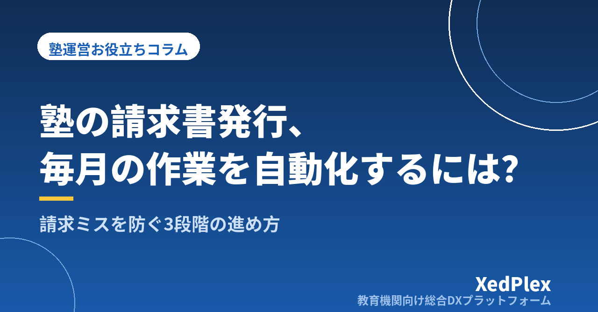

塾の請求書発行を効率化・自動化する手順｜毎月の請求業務を「作る」から「確認する」に変える

毎月の月末や月初になると、「今月も請求書を作らなければ」と気が重くなる──個人経営の塾では、請求書の作成から発行、入金の確認までを塾長がひとりで担っていることがほとんどです。授業と授業準備が終わった夜に名簿と出欠表を突き合わせ、講習費や教材費を思い出しながら1枚ずつ請求書を仕上げていく。この作業に毎月何時間も取られているなら、見直す余地は大いにあります。
この記事では、塾の請求書発行がなぜ時間のかかる作業になるのかを整理したうえで、請求ミスが起きる典型的な原因と、手作業の請求業務を「雛形化→名簿連動→システム化」の3段階で自動化していく手順を解説します。
塾の請求書はなぜ毎月「ゼロから作る作業」になるのか
塾の月謝は毎月ほぼ同じ金額のはずなのに、請求書づくりは毎月大変。それはなぜでしょうか。理由は、固定の月謝のうえに、毎月変わる「変動要素」が乗ってくるからです。
- 季節講習費・模試代・検定料：夏期・冬期などの講習月だけ大きな金額が加わる
- 教材費：新しいテキストを購入した生徒にだけ発生する
- 月途中の入塾・退塾：日割り・回数割りの計算が必要になる
- コマ数の増減：個別指導では追加コマや曜日変更で金額が変わる
- 割引：兄弟割引・紹介割引など、生徒ごとに条件が違う
やっかいなのは、こうした変動情報が申込書・出欠表・保護者とのやり取り・塾長の頭の中と、バラバラの場所に散らばっていることです。請求書を作るたびに情報をかき集めて計算し直すことになるため、本来は「先月の繰り返し＋差分」で済むはずの仕事が、毎月ゼロから作る作業になってしまうのです。
請求ミスが起きる3つの原因
請求業務で本当に怖いのは、時間がかかることよりも金額を間違えることです。お金のミスは1回でも保護者の記憶に残り、塾への信頼に直結します。ミスの原因は、突き詰めるとほぼ次の3つに集約されます。
原因1：転記が多い
申込書から名簿へ、名簿から請求書へ、通帳から入金表へ──手で書き写す回数が多いほど、ミスの入り込む余地は確実に増えます。生徒30名の塾で毎月3か所に転記していれば、単純計算で年間1,000回以上の「書き写し」をしていることになります。
原因2：変動情報が集まってこない
講習の申込を口頭で受けたまま控えを残していなかった、教材を渡したことを請求に反映し忘れた、退塾の連絡が名簿に反映されていなかった──「起きたこと」が請求データに集まってこないケースです。請求し忘れはそのまま塾の損失になり、逆の二重請求は信頼問題になります。
原因3：ルールが決まっていない
月途中入塾の日割り計算、欠席したときの扱い、講習費をどの月に請求するか。ルールが明文化されていないと毎回その場で判断することになり、生徒によって扱いがブレます。ブレは計算間違いの温床になるうえ、保護者どうしの会話から「うちと扱いが違う」と指摘される火種にもなります。
自動化の前に「請求のルール」を固定する
効率化と聞くとまずツールを探したくなりますが、順番が逆です。ルールが曖昧なまま道具だけを入れても、毎月の「判断」は消えません。先に次の4つを決めて、紙1枚にまとめておきましょう。
| 決めること | 例 |
|---|---|
| 締め日と発行日 | 毎月20日締め・25日発行・翌月5日支払期日 |
| 日割り・回数割りのルール | 月途中の入塾は授業回数で按分する、など |
| 講習費・教材費を請求する月 | 申込の翌月にまとめて請求する、など |
| 割引の条件と金額 | 兄弟同時在籍の場合の割引額と適用範囲、など |
これらは入塾案内や月謝規定として保護者にも共有しておくと、問い合わせ対応も楽になります（開業時に決めておきたい事務まわりの全体像はこちらの記事で解説しています）。ルールが固定されれば、請求書づくりから「考える工程」が消え、残るのは機械的な作業だけになります。機械的な作業まで落とし込めれば、自動化は一気に進みます。
手作業から自動化までの3段階
いきなりすべてを自動化する必要はありません。自塾の現在地に合わせて、次の3段階で進めるのが現実的です。
段階1：雛形をつくる（脱・毎回ゼロから）
請求書のフォーマットと、月謝・講習費・教材費などの料金一覧（品目マスタ）をエクセルで用意し、毎月コピーして使い回します。「この生徒の月謝はいくらだったか」を都度思い出す作業がなくなるだけでも、時間とミスは目に見えて減ります。
段階2：名簿とつなげる（脱・転記）
生徒名簿にコース・コマ数・割引の列を持たせ、請求書側は名簿から金額を自動で参照するように関数で連動させます。毎月手を動かすのは、講習費や教材費など「その月だけの変動分」の入力だけになり、転記そのものがなくなります。
段階3：システムでまとめる（脱・ファイル管理）
生徒数が増えて、名簿やファイルの管理自体が負担になってきたら、生徒情報と請求をひとつのシステムで管理する段階です。生徒ごとのコース情報から毎月の請求が自動で組み上がり、変動分を追加するだけで全員分の請求が確定します。入金の記録まで同じ場所で管理できれば、「誰が未納か」を探す作業も不要になります。エクセル管理の限界サインと乗り換えの判断基準はこちらの記事で詳しく解説しています。
ルールが固定されていない塾がいきなりシステムを入れると、「例外処理」の連続で挫折しがちです。ルールの固定→雛形化→名簿連動と足場を作ってからシステム化すると、移行がスムーズに進みます。
どの段階でも効く：発行前チェックを習慣にする
3段階のどこにいても、発行前の最終チェックを決まった手順にしておくと、ミスは大きく減らせます。チェック項目は増やしすぎず、間違いが起きやすいポイントに絞るのがコツです。
- 今月の入塾・退塾・コース変更の生徒を先に一覧にし、その生徒の請求額だけ重点的に確認する
- 講習・教材・模試の申込一覧と請求書の変動項目を突き合わせる
- 割引対象の生徒に割引が適用されているかを確認する
- 先月と金額が変わった生徒だけを抽出し、変わった理由を説明できるか確かめる
全員分を頭から見直すのではなく、「変化があった生徒」に確認を集中させるのがポイントです。変化のない生徒の請求は先月の繰り返しなので、仕組みさえ整っていれば間違えようがないからです。
発行だけでなく「回収と消込」までをセットで考える
請求書は送って終わりではありません。実務では、入金を確認して請求と突き合わせる「消込」と、未納者へのフォローという後半戦が待っています。現金や振込での集金はこの消込の負担が重く、月謝袋の集計や通帳との照合に毎月時間を取られがちです。
たとえば「20日締め・25日発行・翌月5日支払期日・10日に入金確認・未納があれば12日までに連絡」というように、発行から未納フォローまでを1本のカレンダーにしておくと、請求業務全体が「決まった日に決まったことをするだけ」になります。
請求業務全体を軽くする観点では、集金方法を口座振替のような自動的な仕組みに寄せていくことも、請求書づくりの効率化と同じくらい効果があります。集金方法ごとの長所短所と未納を防ぐ運用ルールは、月謝管理・集金方法の記事にまとめています。
まとめ
塾の請求書発行が毎月の重労働になるのは、変動要素の情報が散らばり、ルールが決まらないまま、手作業で組み立てているからです。まず締め日・日割り・講習費の請求月・割引条件をルールとして固定し、そのうえで「雛形化→名簿連動→システム化」と段階的に自動化を進めれば、請求業務は「作る作業」から「確認する作業」に変わります。月末の夜を請求書づくりに使うか、指導の準備に使うか──その差は、1年経てば大きな違いになります。
この記事を書いた運営より
私たちは、個人経営・小規模の学習塾向けに、生徒管理・QRコードでの入退室記録・月次請求・保護者へのLINE/メール通知・AIによる学習支援までをひとつにまとめた教育機関向け総合DXプラットフォーム「XedPlex（ゼドプレックス）」を開発・提供しています。初期費用は0円、料金は生徒1名あたり月額300円（税込）から。生徒50名の塾なら月15,000円（税込）です。全国8つの教室で導入されており、導入塾には紹介ホームページの無料作成も行っています。機能の詳細説明はこちら。
XedPlexの詳細を見る